Next: Microphone Array Beamforming Up: Introduction to Acoustic Array Previous: Passive Apertures Contents
Over the general directivity pattern in eq. 2.27 one can apply some simplifications, oriented towards array processing:
In this case the directivity function simplifies to
| 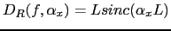 | (2.28) |
which contains zeros of reception at
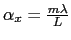 with  being a scalar value.
being a scalar value.
At all effects, a linear sensor array can be considered as a sampled version of a continuous linear aperture. One can obtain the aperture function of the array as the superposition of all individual element functions ( 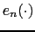) which are equivalent to the array function and measure the element's response for a particular direction of arrival. The aperture function is now written as:
| 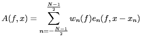 | (2.29) |
for an array with N elements, where 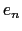 is the
element function for element  , 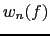 is the complex
weighting for element
, 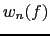 is the complex
weighting for element  and 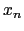 is the position of such
element in the 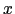 axis.
and 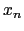 is the position of such
element in the 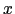 axis.
For the far-field case, and considering all elements with identical element function, the directivity function can be computed as
| 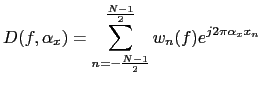 | (2.30) |
In where the complex weighting can be expressed as module and phase in the following way:
where  can be used to control the shape of the
directivity and
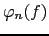 to control the angular location
of the main lobe, being both scalar functions.
can be used to control the shape of the
directivity and
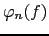 to control the angular location
of the main lobe, being both scalar functions.
Beamforming techniques that use a microphone array for acoustic enhancement of the signal play with these two parameters to obtain the desired shaping and steering of the lobes of the directivity pattern to certain locations in the space. Some of these techniques use the approximation of far-field signals done in here and others (fewer) consider near-field waves, with different directivity pattern development.